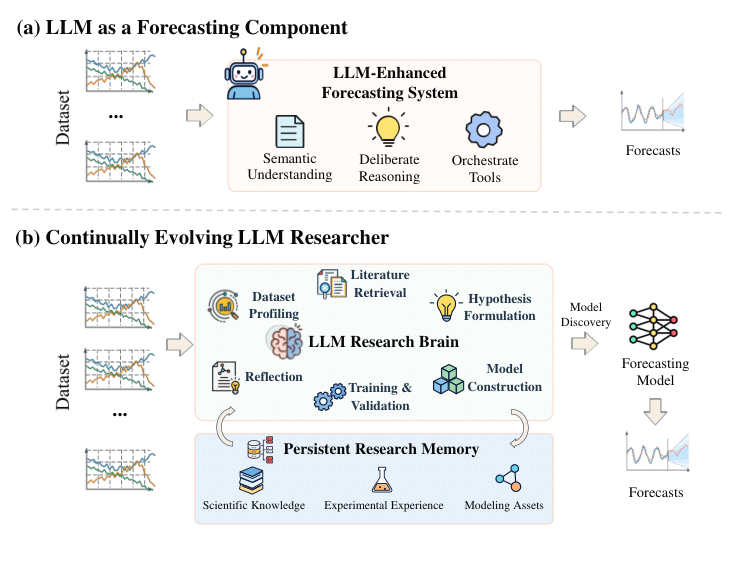
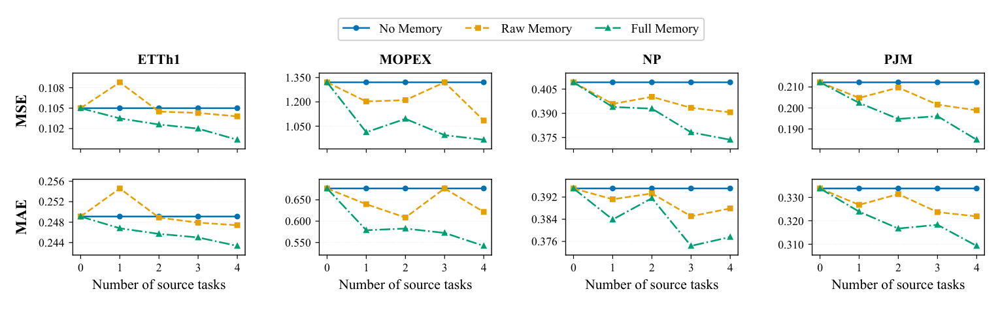
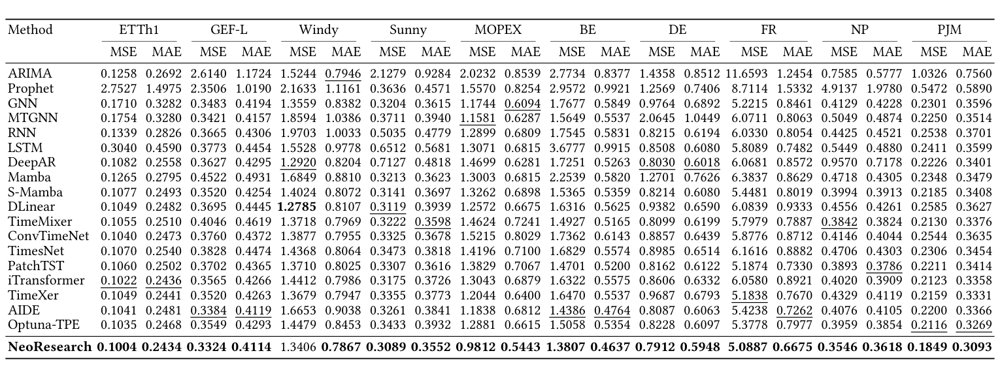
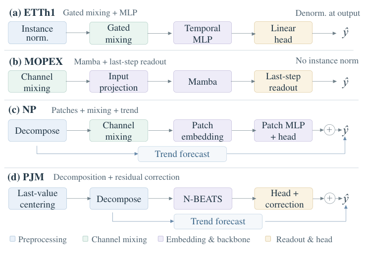
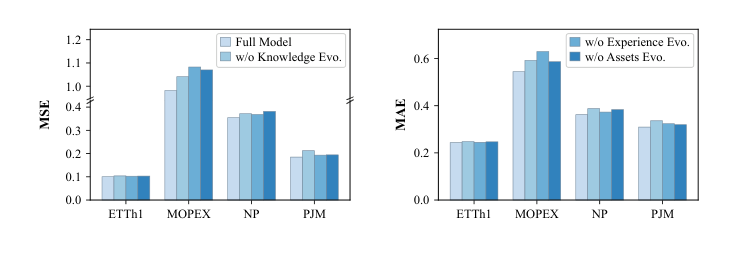
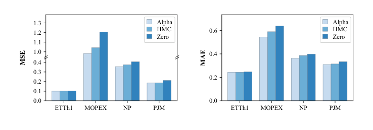
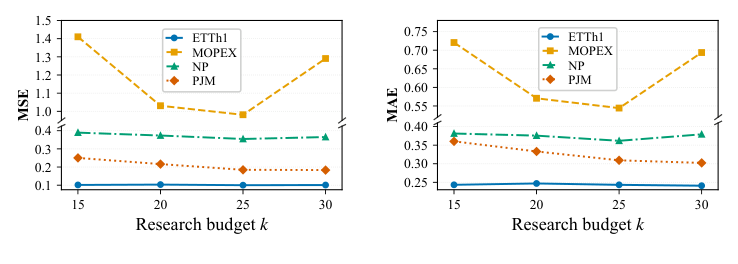
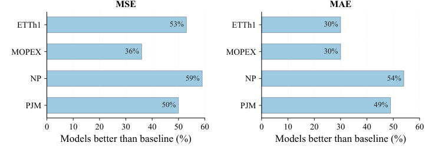
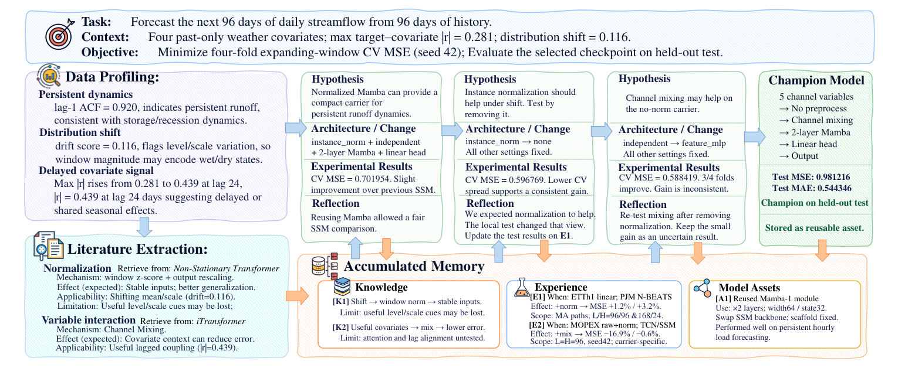

What should we build?
Connect temporal dynamics and variable relationships to modeling mechanisms and their evidence in scientific literature.
Autonomous research for time series
Literature- and Experience-Guided
Autonomous Time Series Model Discovery
State Key Laboratory of Cognitive Intelligence
University of Science and Technology of China
An LLM researcher. Task-specific models. Experience that carries forward.
Abstract
Developing effective forecasting models for diverse time-series domains requires substantial expert knowledge, evidence from scientific literature on the web, and iterative experimentation. However, translating this knowledge and research experience into model designs requires preserving source context and testing applicability under task-specific assumptions. In this paper, we propose NeoResearch, a literature- and experience-guided autonomous research framework that leverages large language models (LLMs) as researchers to discover lightweight, domain-specific forecasting models.
Specifically, NeoResearch establishes an expert-inspired dual-loop research workflow, coupling hypothesis-driven architecture exploration with iterative training and hyperparameter optimization through experimental feedback. To enable knowledge-grounded discovery, the agent autonomously mines scientific literature from the Web, extracting modeling mechanisms, empirical evidence, and applicability conditions to formulate task-grounded, testable architecture hypotheses. Furthermore, a hierarchical experience memory links literature findings to experimental outcomes and consolidates conditional lessons, guiding architecture discovery and training optimization while supporting reuse across forecasting tasks. Experiments on ten datasets show competitive performance and support dual loops, literature extraction, and memory reuse.
The research perspective
A general-purpose LLM organizes the research. The discovered lightweight model performs numerical forecasting independently of the LLM.
Connect temporal dynamics and variable relationships to modeling mechanisms and their evidence in scientific literature.
Use validation errors and convergence diagnostics to decide whether a candidate needs better optimization or a new architectural hypothesis.
Retain what changed, under which conditions, and with what outcome. Reassess applicability when experience is reused.

Method
Literature motivates hypotheses. Experiments test them. Reflection determines the next step.
Analyze the target data. Retrieve literature, mechanisms, source evidence, and relevant prior experience.
Task-grounded evidenceForm a testable architectural hypothesis and translate it into a structured, executable model recipe.
Literature-guided discoveryRefine training for the fixed design using validation metrics, convergence curves, and error analysis.
Evidence-guided optimizationAssess the mechanism, revise its applicability, and consolidate conditional lessons for future research.
Persistent research memoryOuter loop
Choose preprocessing, temporal backbones, variable interactions, and module compositions. Preserve the source, expected effect, applicability conditions, and observations that would challenge each hypothesis.
Inner loop
Keep the design fixed while adjusting learning rates, batch sizes, regularization, scheduling, and training loss. Return the best validated model with diagnostics and a complete experiment history.
Traceable by construction. Structured recipes and persistent state link hypotheses, designs, runs, and model artifacts. Validation MSE selects candidates; test data are excluded from research decisions.
Hierarchical experience memory
Preserve evidence and conditions alongside outcomes, so prior findings can be tested and revised on a new task.
Mechanisms, hypotheses, designs, architecture revisions, and experimental outcomes guide what to build and which assumptions to test.
Training configurations, tuning outcomes, and convergence patterns guide how to train a candidate and when to revisit the design.

EnlargeBenchmark results
Electricity markets, energy systems, and hydrology. Compared with 16 forecasting baselines and two automated model-development methods.
19/20
Best MSE on 9 of 10 datasets and best MAE on all 10. Each comparison uses the strongest baseline for that dataset and metric.
Up to 25 research iterations · ≤10M parameters per candidate · validation-based selection · held-out testing
Against the best baseline
Reduction = 100 × (best baseline − NeoResearch) / best baseline. A positive value means lower error. Bar lengths share a fixed 18% scale across both metrics.
| Dataset | Mean squared error ↓ | Mean absolute error ↓ | ||||
|---|---|---|---|---|---|---|
| Best baseline | NeoResearch | Reduction | Best baseline | NeoResearch | Reduction | |
| ETTh1 | 0.1022iTransformer | 0.1004 | +1.8% | 0.2436iTransformer | 0.2434 | +0.1% |
| GEF-L | 0.3384AIDE | 0.3324 | +1.8% | 0.4119AIDE | 0.4114 | +0.1% |
| Windy | 1.2785DLinear | 1.3406 | −4.9% | 0.7946ARIMA | 0.7867 | +1.0% |
| Sunny | 0.3119DLinear | 0.3089 | +1.0% | 0.3598TimeMixer | 0.3552 | +1.3% |
| MOPEX | 1.1581MTGNN | 0.9812 | +15.3% | 0.6094GNN | 0.5443 | +10.7% |
| BE | 1.4386AIDE | 1.3807 | +4.0% | 0.4764AIDE | 0.4637 | +2.7% |
| DE | 0.8030DeepAR | 0.7912 | +1.5% | 0.6018DeepAR | 0.5948 | +1.2% |
| FR | 5.1838TimeXer | 5.0887 | +1.8% | 0.7262AIDE | 0.6675 | +8.1% |
| NP | 0.3842TimeMixer | 0.3546 | +7.7% | 0.3786PatchTST | 0.3618 | +4.4% |
| PJM | 0.2116Optuna-TPE | 0.1849 | +12.6% | 0.3269Optuna-TPE | 0.3093 | +5.4% |
Values are reproduced from the manuscript. The best baseline can differ between MSE and MAE. EPF datasets (BE, DE, FR, NP, PJM) use a 168→24 horizon; the remaining tasks use 96→96. All covariates are observed-past inputs.

EnlargeAnalysis & ablations
The paper examines the research loops, structured literature extraction, memory, and the models they produce.
Removing either loop increases MSE and MAE across all ten tasks. Architecture exploration benefits from training feedback; training benefits from revisiting the design.
Table 2 · dual-loop ablationStructured extraction outperforms direct source-text access and excluding literature on all four evaluated tasks. Source evidence becomes a testable hypothesis.
Table 4 · knowledge extractionRemoving architecture-level memory, optimization-level memory, or both worsens forecasting. Useful experience includes failed interventions and unresolved explanations.
Table 3 · hierarchical memory




Case study · MOPEX streamflow
Distribution shift suggests normalization may help. Controlled experiments reveal that preserving level and scale is more useful for this task.
Reuse a compact temporal backbone for persistent runoff dynamics.
Keep other settings fixed. Lower CV spread supports a consistent gain.
Mean error improves, but inconsistent fold-level gains keep attribution uncertain.

EnlargeOpen source
Set up NeoResearch from source, connect an LLM provider, and create a forecasting task from your CSV data.
Explore the repositoryLinux or macOS · Node.js 20+ · Bun 1.3.13
Python 3.10+ · uv
git clone https://github.com/Kawai1Angel/NeoResearch.git
cd NeoResearch
# Install and initialize the runtime
make setup
(cd neo_cast && npm install && node bin/neo-cast.js init-runtime)
# Check the environment and start the CLI
make doctor
make dev-cliCLI, TUI Cockpit, web dashboard, and autonomous research workflow.
neo_cast/Dataset preparation, model recipes, training, evaluation, and model export.
scripts/Local setup, environment checks, development, and project verification.
Choose how to collaborate. Socratic clarifies requirements up front, then researches autonomously. Companion pauses for your approval at key stages. Read the getting-started guide ↗
Citation
If NeoResearch is useful to your work, please cite the manuscript.
@misc{guo2026neoresearch,
title = {NeoResearch: Literature- and Experience-Guided
Autonomous Time Series Model Discovery},
author = {Guo, Ze and Cheng, Mingyue and Tao, Xiaoyu
and Yu, Shuo and Ye, Shangtong},
year = {2026},
note = {Research manuscript},
url = {https://github.com/Kawai1Angel/NeoResearch}
}Citation metadata follows the manuscript included with this project.